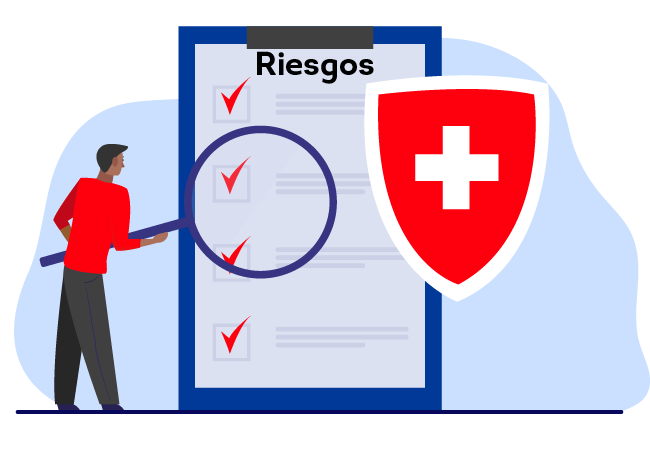

Asamblea General de Accionistas
Pase el mouse sobre los íconos.
La Asamblea General de Accionistas ejerce el control directo sobre las actividades de los principales ejecutivos, directores y administradores.
Las principales funciones de la Asamblea General de Accionistas son:
Control Interno
Pasa el mouse sobre los textos resaltados
El control interno es un proceso realizado por la Junta Directiva, los administradores y demás funcionarios de la Entidad para proporcionar seguridad en la búsqueda del cumplimiento de los objetivos de la Entidad, teniendo como fundamento los principios de autocontrol, autorregulación y autogestión.
|
Sistemas de Administración de Riesgo

La Junta Directiva del Banco establece los Riesgos Inherentes de Alto Impacto para el Banco y la gestión de los siguientes riesgos:
|
De Crédito |
|
De Mercado y liquidez |
|
Operativo |
|
Continuidad del Negocio |
|
SARLAFT |
|
Seguridad y Ciberseguridad |
|
Cumplimiento Regulatorio |
Contraloría General
La Contraloría General desarrolla la auditoría interna en el Banco para proporcionar una opinión independiente sobre la eficacia de los procesos de gobierno corporativo, gestión de riesgos y cumplimiento, promoviendo la cultura de autocontrol.
Revisoría Fiscal
La Asamblea General de Accionistas nombra un Revisor Fiscal para la Entidad, por un período de un año.
Determinar los mecanismos para la evaluación y control de las actividades de los administradores, los principales ejecutivos y los directores.
Efectuar el examen y la aprobación o improbación del informe de gestión, los estados financieros, los balances de fin de ejercicio y de las cuentas que deben rendir el Representante Legal de la Entidad y la Junta Directiva.
El control interno debe promover la eficiencia de la Entidad, de manera que se reduzcan los riesgos de pérdidas de activos operacionales y financieros, y se propicie la preparación y difusión de estados financieros confiables, así como el cumplimiento de las disposiciones legales y estatutarias.
Realizar una adecuada gestión, de forma que los riesgos materiales sean identificados, medidos, controlados y monitoreados.
Mantener y monitorear un marco de apetito de riesgo acorde con la realidad del Banco y los objetivos corporativos.
La autoridad para acceder a la Junta Directiva y al Comité de Riesgos respectivo o Alta Gerencia sin ningún impedimento.
La autoridad para reunirse con la Junta Directiva y el Comité de riesgos respectivo sin la presencia de la Alta Gerencia.
Acceso a los registros, información y personal del Banco.
Los recursos y la capacidad para definir el alcance de la gestión del riesgo con el fin de lograr los objetivos esperados.
La autoridad para hacer seguimiento de las medidas tomadas por la administración, en respuesta a los problemas identificados y a las recomendaciones efectuadas.
Los Comités definidos o la Junta Directiva, instancias colegiadas para la administración de cada uno de los tipos de riesgo, son las encargadas de aprobar las políticas y procedimientos para su gestión.
Puede ser reelegido o removido libremente por la Asamblea General de Accionistas.
Su remuneración es asignada por la Asamblea General de Accionistas, teniendo en cuenta los recursos humanos y técnicos necesarios para el desempeño de sus funciones.
Todo accionista tiene derecho a someter a consideración de la Asamblea los candidatos para este cargo. Corresponderá a la Junta Directiva, a través del Comité de Auditoría, someter a consideración de la Asamblea General de Accionistas la hoja de vida de los posibles candidatos.
La Junta no podrá proponer como candidatos a firmas que hayan sido objeto de inhabilitación, suspensión o cualquier otro tipo de sanción impuestas por la auditoría financiera de la autoridad competente.
La selección del Revisor Fiscal se basa en criterios de profesionalidad, experiencia y honorabilidad.
El Revisor Fiscal no podrá ser accionista de la Entidad ni tener incompatibilidades e inhabilidades, teniendo en cuenta la ley y la Circular Básica Jurídica de la Superintendencia Financiera.
Cuando se designe una asociación o firma de contadores como Revisor Fiscal, esta deberá nombrar un contador público que desempeñe personalmente el cargo.
La Superintendencia Financiera es la encargada de la posesión del Revisor Fiscal, la cual sólo se efectuará una vez esta se cerciore del carácter, idoneidad y experiencia del revisor fiscal elegido.
Las funciones del Revisor Fiscal y los informes que debe emitir se encuentran consagrados en la ley, la regulación de la Superintendencia Financiera y en los estatutos.
Las funciones de Revisor Fiscal son incompatibles con el desempeño de cualquier otro cargo o empleo dentro de la Entidad o sus subordinadas.